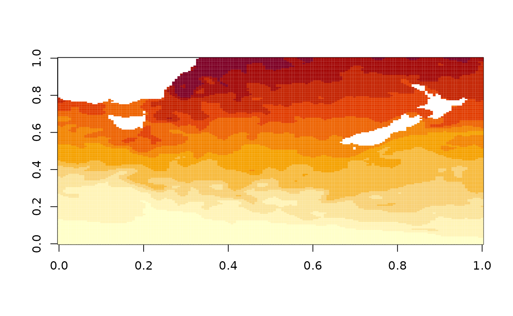
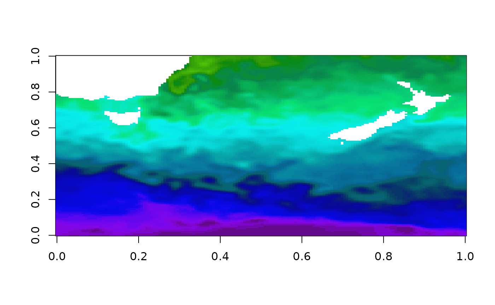
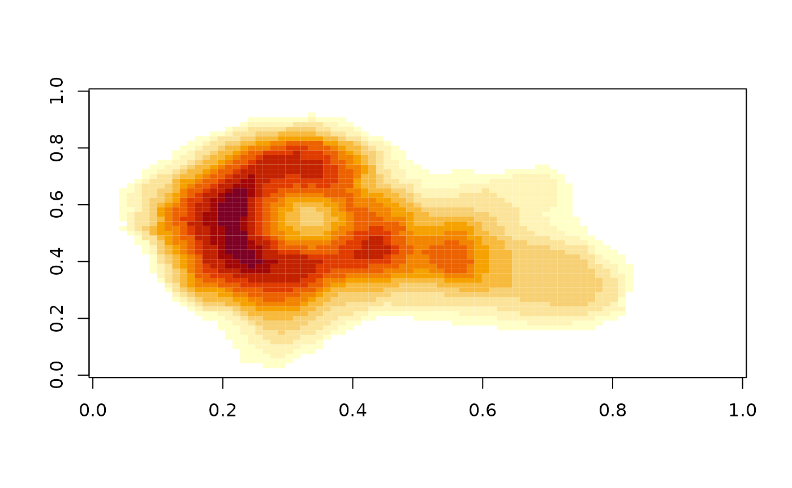
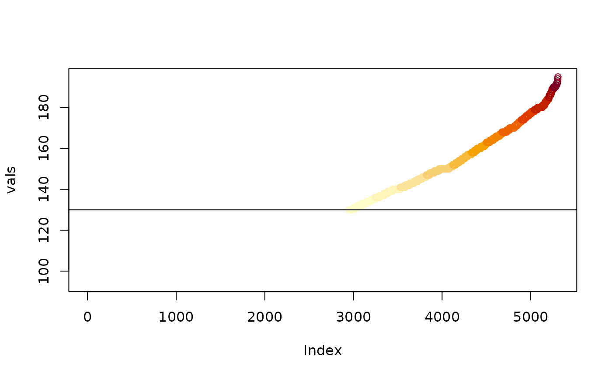

palr
Colours can be frustrating to get just right in R. The palr package provides simple palette functions with standard colour schemes matched to real data values.
There are three main ways of working with palr palette functions.
-
pal(n)return n colours from the palette -
pal(data)return the right colour for values indata -
pal(palette = TRUE)return the entire palette, with colourscolsand intervalsbreaks
Examples
Here we show examples of the use of palr functions.
The oisst data set is a subset the NOAA 1/4° daily
Optimum Interpolation Sea Surface Temperature (Reynolds, 2007) obtained
from the National Oceanic and Atmospheric Administration (NOAA).

The default plot colours uses a setting provided by the base package,
but we have SST data in degrees Celsius so we can use the
sst_pal function to give specific colours for particular
temperatures. The full range of the temperatures is shown on the plot
legend, even though our data only has values in the range NA, NA.

Because we have the palette colours and data in an absolute palette we can also plot other data correctly to scale.
Bake those colours
The function image_pal() can be used to bake a
particular colour scheme into data. This is a bit like the colourvalues
package function colour_values(), which takes raw values
and maps them to a colour scale but is modelled on the
image() function. The image function takes a set of colours
and a set of
breaks to define the colour scale, andimage_pal()` mirrors
its defaults.
## [1] "#000000" "#000000" "#000000" "#000000" "#00FF00" "#00FF00" "#00FF00"
## [8] "#00FF00" "#FF0000" "#0000FF"
plot(1:10, col = col, pch = 19)
By using breaks we are able to control the actual scale of the colour mapping, we can provide different data values but still get the same colour for the same value input (if we set up the scale based on the original data we might have the wrong range).
There’s a simpler interface for using absolute colours than
specifying every break, by using zlim. This value is
ignored if breaks is set.

vals <- sort(unique(volcano))
cols <- image_pal(vals, zlim = c(130, max(volcano)))
plot(vals, col = cols); abline(h = 130)
There are analogous worker functions image_raster() and
image_stars() for packages raster and stars, so we can
emulate a given plot effect and save it as a data object, this can be
easily written out to image format such at GeoTIFF or PNG.